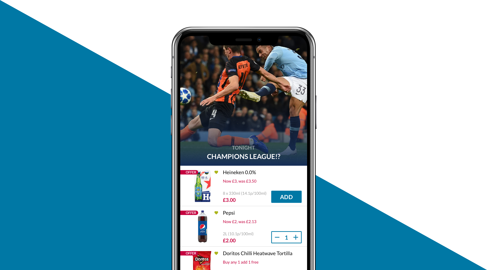
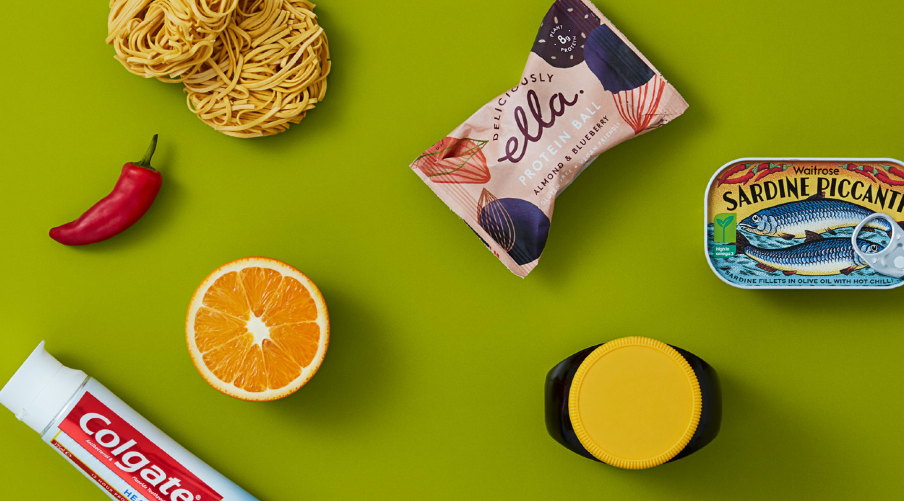
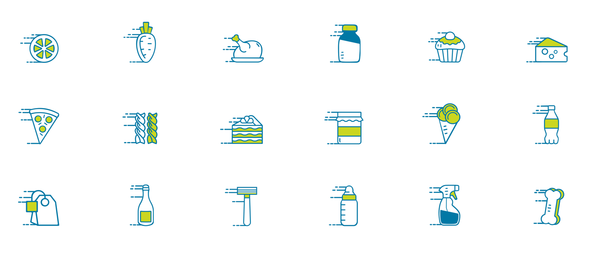
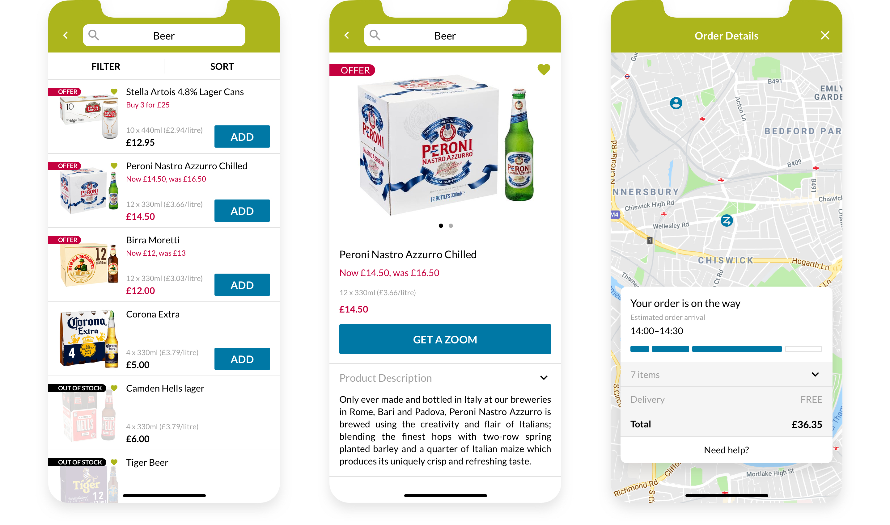

Ocado ZOOM
Lead UX Designer
Ocado Zoom is the on-demand delivery service from Ocado. Offering an extensive range and delivery within an hour, Zoom aims to make life easier for busy Londoners.

My role
I led the design of Ocado Zoom across iOS, Android, Desktop and Web since last year (January 2018).
Our challenge was to evolve with customers and enter the highly competitive food delivery segment in London.
Led all aspects of the UX and UI design.
Liaised with developers, analysts, marketing and stakeholders, to deliver user-centered and business validated outcomes.
Designed from scratch the user experience and visual interface of the multi-brand on-demand mobile platform.
Built, grew and curated an in-house agile UX and UI design team.
Defined and executed the design language, UX strategy, and UI.
Supervised the customer and market research to drive our planning phase.
Contributed on the brand development.


